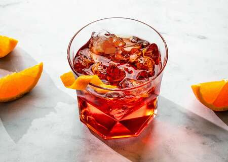

Papa's Classic Negroni Cocktail

The Negroni is a classic Italian cocktail with three ingredients: gin, vermouth, and Campari! It makes a memorable bittersweet drink.
Looking for an iconic classic cocktail? Enter: the Negroni! It’s equal parts refreshing, bitter, and complex: a drink that you’ll want to sit with and savor. The bright red of the Campari makes for a stunning jewel-tone statement of a drink!
This three ingredient cocktail is easy to make and memorize, because it uses 1 ounce of each of its three components. Here’s how to make a Negroni!
Ingredients:
- 1oz Gin
- 1oz Sweet Red Vermouth
- 1oz Campari
- Ice (for serving)
- Orange peel (for garnish)
Steps:
- Combine the gin, sweet vermouth, and Campari in a cocktail mixing glass (or any other type of glass). Fill the mixing glass with 1 handful ice and stir continuously for 30 seconds.
- Add ice to a lowball glass, and strain the drink into the glass (or you can use a cocktail glass without ice).
- Use a knife to remove a 1″ wide strip of the orange peel. Squeeze the orange peel into the drink to release the oils. Gently run the peel around the edge of the glass, then place it in the glass and serve.
Congrats!
Papa would be Proud! Only a Master Mixer could truly whip up one of these Italian Classics. But then again, I've always trusted my Papa, and maybe I can trust you to maybe try out one of our family's other recipes! Enjoy your ice-cold Negroni!
Back to Home?...or try another Recipe?
to the Homepage
to Mamma's Lovely Zucchini Lasagna
to Nonna's Delicious Ribollita